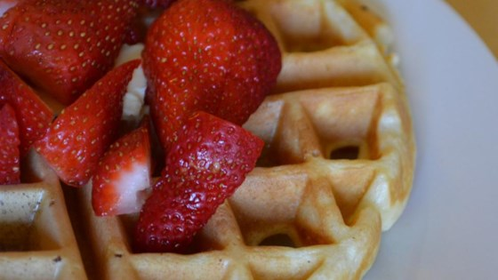

"Tender and Easy Buttermilk Waffles"

Recipe by: empebi
Original recipe
Ingredients
- 2 cups all-purpose flour
- 2 tablespoons white sugar
- 2 teaspoons baking powder
- 1 teaspoons naking soda
- 1/2 teaspoon salt
- 2 cups low-fat buttermilk
- 1/3 cup melted butter
- 2 large eggs, lightly beaten
- 1 teaspoon vanilla extract
- Whisk flour, sugar, baking powder,
baking soda, and salt together in a bowl until evenly combined.
Whisk buttermilk and butter together in a separate bowl; add eggs.
Stir buttermilk mixture into flour mixture
until just combined and batter is slightly lumpy; add vanilla extract.
- Preheat a waffle iron according to manufacturer's instructions.
- Pour enough batter into the preheated waffle iron to reach 1/2 inch from the edge.
Cook according to manufacturer's instructions.
Cook's Note:You can heat the oven to about
250 degrees F (120 degrees C) to 275 degrees F
(135 degrees C), and place a rack on a baking sheet to keep waffles
warm as you make the whole batch.
Tip: Aluminum foil helps keep food moist, ensures it cooks evenly,
keeps leftovers fresh, and makes clean-up easy.
Contact
- E-mail
-
The University of Montana
32 Campus Dr
Missoula, MT 59812